地政学
ギザは首都ではないが、エジプト国家の歴史像を世界へ示す場所である。ナイル西岸の台地、カイロ中心部、空港、博物館、砂漠道路が結ばれ、文化外交と観光収入、警備、都市開発が交差する要衝だ。国内政治の記憶も映す。

🇪🇬 エジプト / アフリカ / World City Atlas
ピラミッド台地、ナイル西岸、カイロ都市圏の外縁、観光労働、遺産保護、住宅地の拡大が重なる、古代と日常が近接する都市。
都市の骨格
ギザは古代遺産の象徴であると同時に、住宅、大学、幹線道路、観光サービス、農地、ナイル西岸の暮らしが密に重なる都市です。
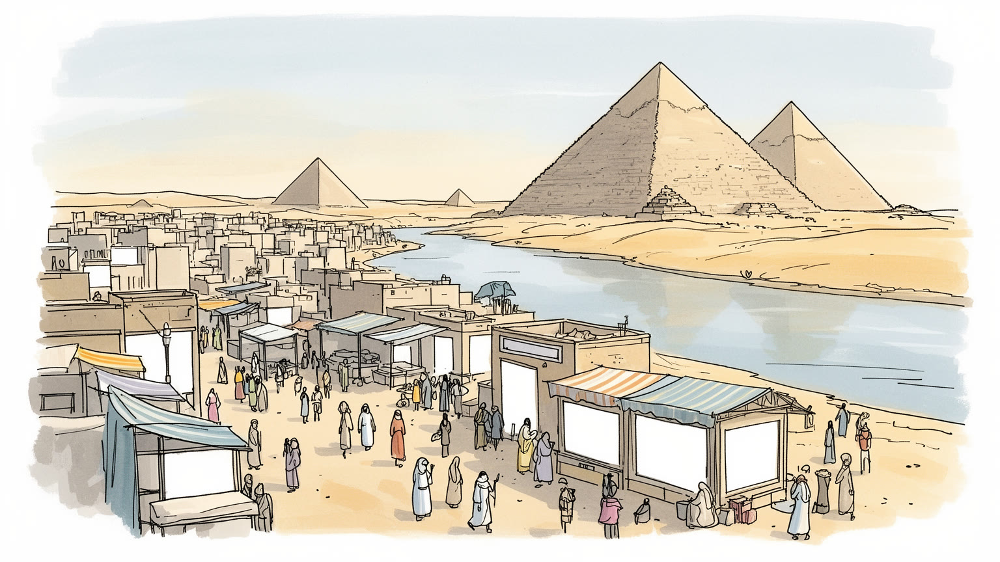
ギザは首都ではないが、エジプト国家の歴史像を世界へ示す場所である。ナイル西岸の台地、カイロ中心部、空港、博物館、砂漠道路が結ばれ、文化外交と観光収入、警備、都市開発が交差する要衝だ。国内政治の記憶も映す。
観光、宿泊、案内、馬車、土産物、石材、建設、小売、大学周辺のサービスが雇用を作る。外貨を生む一方で、客足や為替、治安報道に揺れ、非公式労働と家族経営が暮らしを支える街だ。若者の技能と賃金も問われる。
古代王墓の近くで、イスラムの礼拝、コプトの記憶、家族行事、学校、食堂、市場が続く。遺産は遠い過去ではなく、祈り、商売、祝い、弔い、観光客との会話に混ざり日常を動かす。地域の誇りにもなる場だ。今も。
旅人はピラミッドを目指すが、住民には家賃、通勤、砂ぼこり、学校、医療、渋滞、廃棄物の課題がある。壮大な景観のすぐ近くで、住宅地と店と農地が生活をつなぐ現代都市である。働く日々も続く街だ。今もここで。
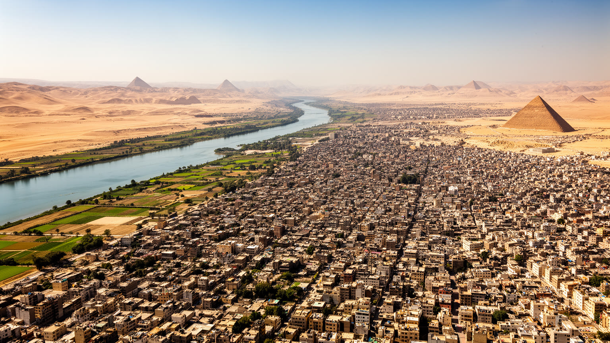
ギザの位置は、ナイル川の西岸と砂漠台地の境目にあることから始まる。川沿いには農地、住宅、大学、橋、幹線道路が続き、少し西へ進むと乾いた台地とピラミッドの風景に変わる。カイロ中心部から見れば対岸の都市だが、通勤、通学、買い物、観光では一つの巨大な首都圏として動く。橋を渡る時間、環状道路への入り方、地下鉄やミニバスへの接続が、住む場所の便利さを決める。ナイルの水は古代から耕作と定住を支え、現代でも緑地、飲料水、食料流通、河岸の景観を作る基盤である。一方で都市の拡大は農地を圧迫し、砂漠側の開発は自動車依存を強める。ギザを地図で読む時、ピラミッドだけを点で見ると都市の現実を取り逃がす。川、農地、住宅、台地、橋が連続することで、古代遺産と毎日の暮らしが同じ動線に置かれている。水辺の湿り気と台地の乾燥、農村的な細道と観光道路の広さが隣り合うため、ギザの景観は短い移動で大きく変わる。都市の価値は古代の石造物だけでなく、水と土地の限られた余白をどう使うかにも表れる。農地の端に住宅が迫る場所では、食料を育てる土地と住まいを求める家族の競合が見える。川の近さは涼しさと便利さを与えるが、地価や混雑も高める。砂漠側の道路は開発を広げる一方、徒歩や公共交通に頼る人を中心から遠ざけることもある。この緊張が街を形づくる。
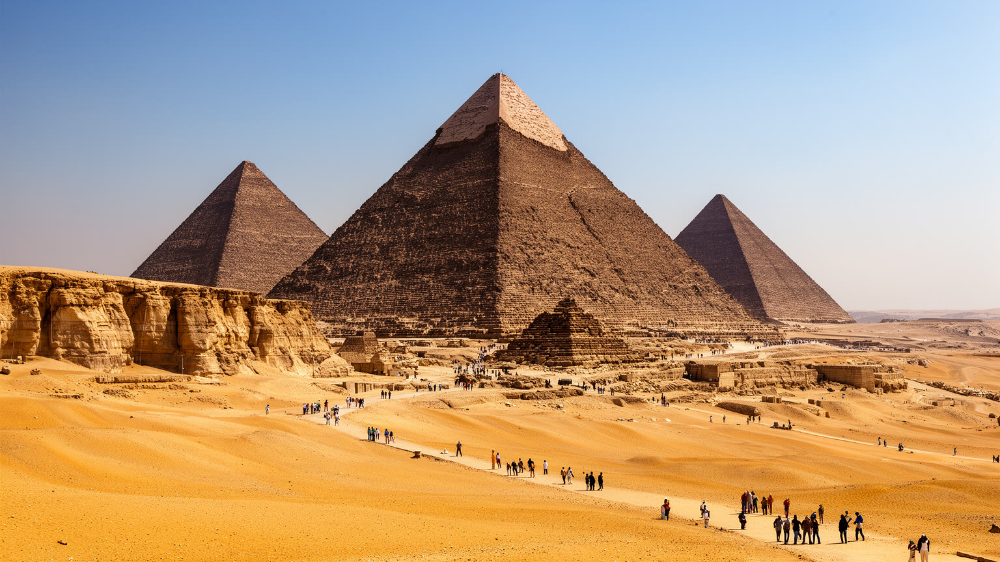
ギザのピラミッド台地は、世界で最も知られた古代景観の一つであり、同時に現代都市の縁に置かれた管理空間でもある。クフ、カフラー、メンカウラーの三大ピラミッドとスフィンクスは、古王国時代の王権、宗教、労働組織、測量技術を示す巨大な記念物である。だが台地は静かな砂漠の中に孤立しているわけではない。すぐそばには住宅地、観光道路、警備施設、駐車場、土産物商、馬やラクダを扱う家族、博物館へ向かう車列がある。訪問者が見る古代の輪郭は、現代の照明、フェンス、順路、チケット制度、清掃、警備によって保たれている。遺跡を守るには石材の保存だけでなく、地下水、振動、排気、無秩序な開発、過剰な客引き、動物福祉も扱わなければならない。台地は古代王の墓であると同時に、国家の象徴、観光商品の核、地域労働の場、都市計画の境界である。ピラミッドの大きさは見る人を圧倒するが、その周囲の管理の細部まで含めて初めて、遺産が現在も都市の中で生きていることが分かる。朝の光を待つ観光客、暑さを避ける警備員、客を探す若者、修復に関わる専門家は同じ台地を別の目的で使う。遠景の美しさと足元の労働を重ねると、台地は写真の背景ではなく、厳しく運用される都市施設にも見えてくる。視線を少し下げるだけで、保存と商売と警備の緊張が見える場所だ。今も。
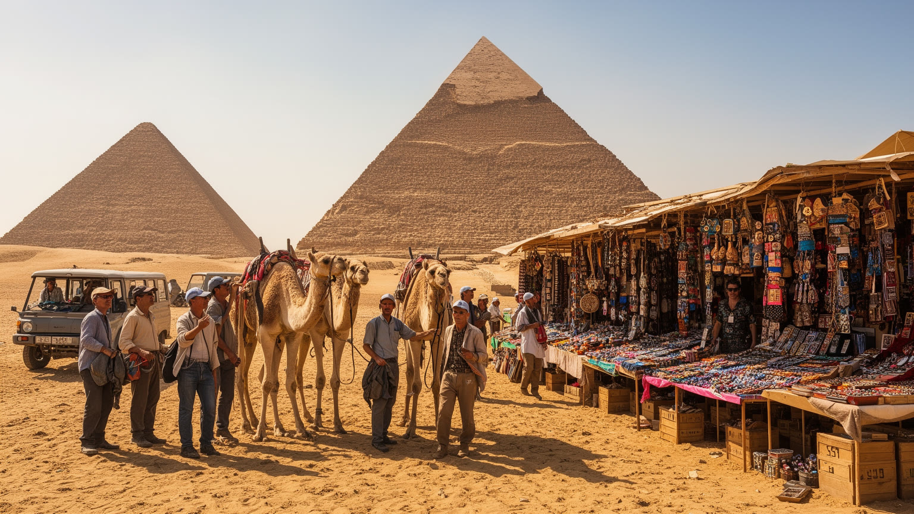
ギザの観光は、ピラミッドを見る短い体験の背後に、多層の労働を抱えている。ホテル、旅行会社、ガイド、運転手、警備、清掃、写真撮影、土産物販売、飲食、馬やラクダの世話、博物館職員、修復技師が、訪問者の一日を支える。観光客の数が増えれば外貨と雇用が生まれるが、収入は季節、為替、航空便、治安報道、世界的な不況に左右されやすい。家族経営の店や非公式の案内業は柔軟に働ける一方、価格交渉の厳しさ、手数料、警備規制、健康保険の弱さにさらされる。旅人にとっては一度の値段交渉でも、住民には家計を支える毎日の収入である。大エジプト博物館や道路整備は観光の質を上げる可能性を持つが、利益が大手施設だけに集まれば周辺の小さな働き手は取り残される。持続的な観光には、訓練、透明な料金、動物の扱い、女性が働きやすい環境、地域への還元が必要になる。ギザを観光地として読むことは、古代の石を生計に変える現代の仕事を読むことでもある。観光の現場では、語学を学ぶ若者、家族の店を手伝う子ども、長い待機時間を過ごす運転手がいる。収入が不安定なほど、強引な売り込みが起きやすくなり、都市の評判にも跳ね返る。働く人が安心して稼げる制度は、訪問者の体験を良くする条件でもある。観光の質は、料金表の透明さと休める労働環境にも左右されるものだ。
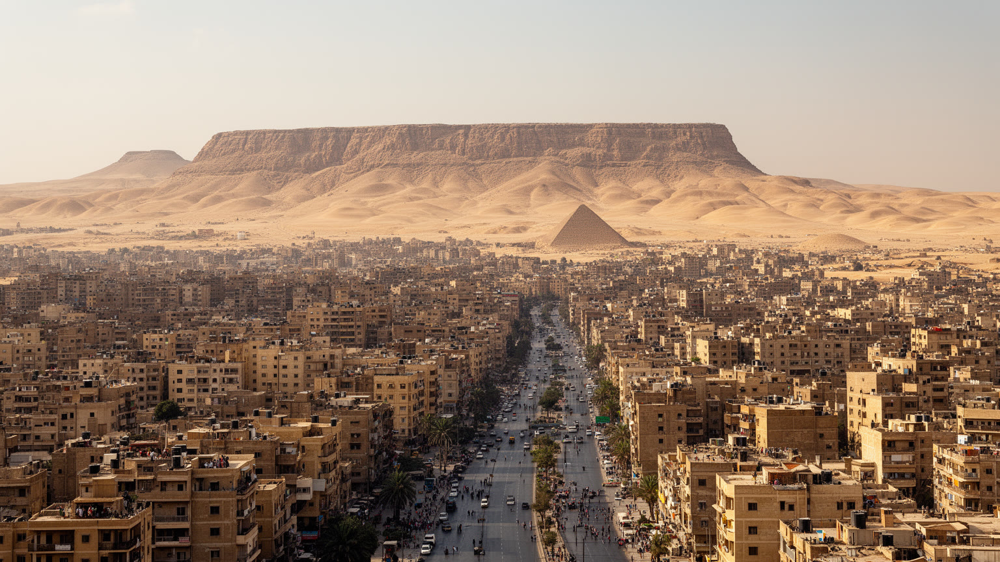
ギザは行政上は独立した県の中心を含むが、生活感覚ではカイロ都市圏の一部として動いている。ナイルを渡る橋、地下鉄、環状道路、マイクロバス、配車サービスが、職場、大学、病院、官庁、市場、空港を結ぶ。カイロ側の雇用に通う人も多く、反対にギザ側の大学、住宅、観光地、商業地へ流れる人も多い。都市の境界は地図の線よりも、通勤時間、橋の混雑、運賃、警備、道路のつながりとして感じられる。中心部より家賃が低い地区は移住者を受け入れるが、人口増加は学校、病院、排水、交通、公共空間に負担をかける。川沿いの高層住宅やホテルと、内側の密集した住宅地、さらに砂漠側の新開発は、同じギザでも異なる生活条件を作る。首都機能が東側や新行政首都へ移っても、ギザは観光と住宅、教育、日常商業で巨大都市を支え続ける。ギザを見るには、カイロの付属物としてではなく、首都圏の成長を受け止める西側の厚い都市として読む必要がある。橋の一本が渋滞すれば、仕事、学校、予約、家族の夕食まで連鎖して遅れる。地下鉄駅の近くでは家賃が上がり、駅から遠い地区ではミニバスや徒歩に頼る時間が増える。都市圏の外縁に住むことは、安い住まいと長い移動を交換する選択でもある。ギザの境界は、毎朝の通勤で測られている。都市の一体感は便利さだけでなく、疲労としても現れる。
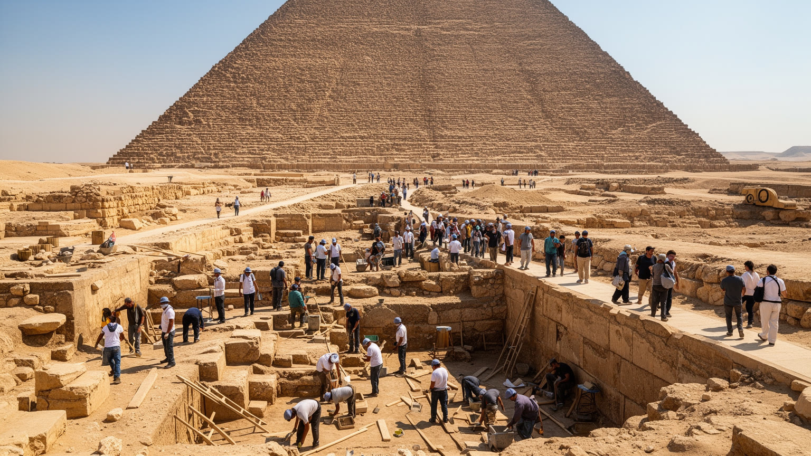
ギザの遺産管理は、世界的な注目を受ける文化財を、巨大都市のすぐ隣で守る難しさを示している。ピラミッドや墓地群は考古学の対象であるだけでなく、国家の誇り、観光政策、教育、地域経済の柱でもある。保存には石の劣化、風砂、振動、地下水、排気、来訪者の接触、廃棄物、周辺建築の景観影響を総合的に見る必要がある。公開を制限すれば保存には有利だが、観光収入と市民の学びの機会は減る。逆に来訪者を増やしすぎれば、遺跡の静けさや安全性、働く人の秩序が崩れやすい。新しい博物館、駐車場、ゲート、照明、デジタル案内は、遺産を分かりやすくする一方、古代景観の受け止め方を変える。管理は専門家だけで完結しない。地元の商人、動物を扱う人、住民、警備、学校、旅行業者が納得し、ルールの利益を感じられることが欠かせない。ギザの保存は、過去を閉じ込める作業ではなく、未来の観光と地域生活を同じ場所で成立させる調整である。世界遺産の名声が大きいほど、管理の失敗もすぐに世界へ伝わる。発掘や修復の専門知識は不可欠だが、日々の清掃、案内、交通整理、店の配置も保存の一部である。ルールが急に変われば働く人の収入は揺れ、放置すれば遺産の質が下がる。この緊張を丁寧に扱うことが、ギザの信頼を守る。保存の合意は、地域の生活を聞く場から育つものだ。今も。
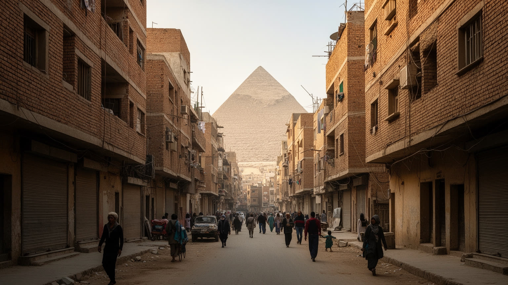
ギザの住宅地は、ナイル近くの古い地区、密集した中層住宅、農地の縁に伸びる街、砂漠側の新開発まで幅広い。人口増加と首都圏の家賃上昇は、家族の同居、増築、未完成建物、遠距離通勤を生み、街路の混雑とインフラ不足を強めてきた。屋上に鉄筋が残る建物や細い路地は、無秩序に見える一方で、将来の子どもの住まいを確保する家族の計画でもある。砂漠側の広い道路と新しい集合住宅は、余裕ある暮らしを約束するように見えるが、職場、学校、病院、公共交通が遠ければ生活費と移動時間を増やす。密集地区では、排水、ゴミ回収、火災、老朽化、プライバシー不足が課題になるが、近所の助け合い、露店、安い食堂、小さな修理店が生活を支える。住宅問題は建物の数だけではなく、若者の結婚、女性の移動、子どもの教育、病院への距離を左右する社会問題である。ピラミッドの近さは誇りにもなるが、観光規制や地価上昇によって生活が圧迫される場合もある。ギザの住まいは、首都圏の膨張と家族の希望がぶつかる場所である。再開発や道路拡幅は安全と便利さをもたらすことがあるが、長く続いた近隣関係や安い家賃を失わせることもある。学校の教室不足、病院の待ち時間、ゴミ置き場の不足は、地図に出にくい住宅問題である。住む場所の選択は、家族の将来設計そのものになる。日々の移動も変える。
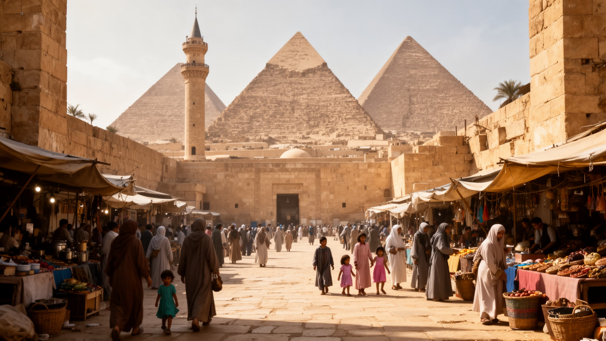
ギザでは、古代エジプトの宗教的記憶が観光の中心にある一方、現在の暮らしはイスラムの礼拝、ラマダン、家族行事、コプト教徒の祝祭、近所の助け合いによって時間を刻む。モスクの呼びかけは商店の開閉や通りの動きを変え、断食月には日没後の食事、贈り物、夜の買い物が街を別のリズムにする。結婚式、葬儀、入学、巡礼の話題は、家族と地域の関係を結び直す。観光客が見る神殿や王墓の図像は遠い古代の信仰だが、住民にとって宗教は現在の倫理、互助、教育、福祉、身分感覚に関わる実践である。貧しい世帯への寄付、近所の食事の分配、学校や病院への相談も、信仰と社会生活が重なる場面である。宗教は都市を単純な対立で分けるものではなく、日々の安心と規範を作る力でもある。ただし少数派の不安や社会的な緊張もあり、共存は自然に保たれるだけではない。ギザを文化的に読むには、古代遺産の神々と、現在の祈りの声、家庭の食卓、祭礼の交通を同じ都市の時間として見る必要がある。砂漠の記念碑と路地の祈りは、別の時代に見えても、住民の誇りの中でつながっている。宗教行事の日には、菓子店、衣料店、交通、親族訪問が一斉に動き、都市の経済も変わる。聖なる時間は静かなものだけでなく、買い物、料理、贈答、混雑を伴う社会的な時間でもある。祈りは市場の時間も整える。
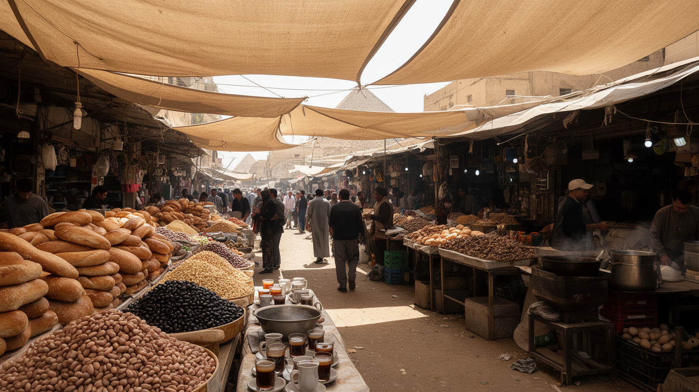
ギザの日常を支えるのは、ピラミッド周辺の土産物だけでなく、住宅地の市場、パン屋、豆料理の店、野菜売り、肉屋、ジュース店、家族の食卓である。エジプトのパン、フール、タアメイヤ、コシャリ、茶、甘い菓子は、通勤者、学生、観光労働者、家族連れをつなぐ。市場にはナイル流域の野菜、デルタや地方から届く食材、輸入小麦の影響を受けるパン、安い昼食を求める働き手が集まる。食の価格は家計に直結し、通貨安、燃料費、補助金、観光客の戻り方が毎日の献立を変える。観光地に近い店では外国人向けの価格や料理も増えるが、少し離れれば住民の朝食、学校帰りの軽食、職人の昼食が街のリズムを作る。女性は買い物、調理、家計管理、親族のもてなしを担うことが多く、食は無償労働と地域経済を結ぶ。市場の会話は価格交渉であると同時に、近所の情報交換でもある。ギザの食を読むと、遺産都市の背景にある生活費、農業、水、物流、家族の役割が見えてくる。観光の印象だけでは分からない都市の安定は、毎朝のパンと豆が手に届くかどうかにかかっている。ラマダンの夜には食堂や菓子店が遅くまでにぎわい、家族の訪問が増える。物価が上がると、祝いの料理、子どもの弁当、外食の回数まで変わる。食卓は経済の変化を最も早く映す場所である。市場の声は暮らしの温度計でもある日常だ。
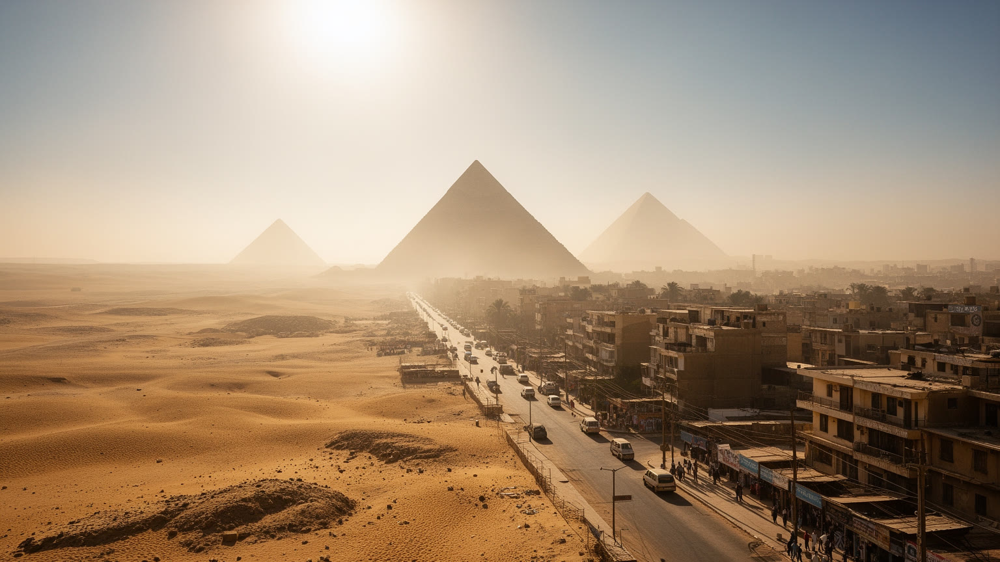
ギザの環境は、乾いた砂漠気候と大都市の排気、建設、人口密度が重なっている。夏は日差しが強く、屋外で働くガイド、警備員、清掃員、建設労働者、露店商に厳しい。観光客にとっては帽子や水を準備する程度の問題でも、毎日働く人には健康、休憩、収入を左右する条件である。砂ぼこりや排気は呼吸器への負担を増やし、道路沿いの住宅や学校に影響する。ナイルの水は生活を支えるが、人口増加、農業、上流の水利用、気候変動によって、その配分は政治的で身近な問題になる。緑地や日陰が少ない地区では、子ども、高齢者、低所得の世帯ほど暑さの影響を受けやすい。エアコンを使えるか、停電や電気料金に耐えられるかで、夏の生活の質は大きく変わる。遺産保護にも気候は関わる。風砂、温度差、湿気、観光客の集中は石材や周辺環境に負荷をかける。ギザの環境対策は美観のためだけではなく、労働者の健康、住民の移動、水の安全、遺跡の保存を結ぶ課題である。日陰のある歩道、清潔な水、公共交通、廃棄物管理は、観光地の印象を整えるだけでなく、暮らしを守る基本的な都市インフラである。砂嵐の日には洗濯、屋台、学校の活動、観光の予定まで変わる。暑さを避けるための休憩所や水場は、観光サービスである前に命を守る設備である。環境の負担は低所得地区ほど重く現れやすい。日陰も福祉である。
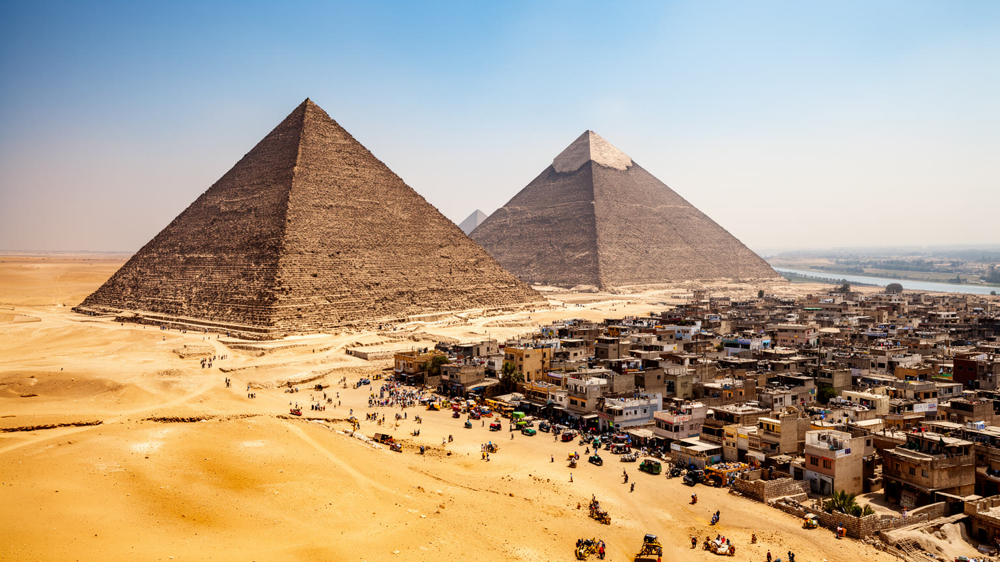
ギザを理解するには、ピラミッドを世界遺産として眺めるだけでは足りない。ナイル西岸の地理、カイロとの通勤圏、観光労働、住宅地の拡大、宗教の暦、市場の食、砂漠の暑さを同じ地図に置く必要がある。古代の王墓は都市に圧倒的な象徴性を与え、国家の歴史像と外貨収入を支える。しかし、その周囲では学校へ向かう子ども、仕事を探す若者、客を待つ運転手、家賃を払う家族、祈りに向かう住民が日常を続けている。遺産の近さは誇りと収入を生む一方、規制、地価、混雑、期待の視線ももたらす。ギザはカイロの影に隠れがちだが、首都圏の西側で人口と観光を受け止める大きな都市であり、古代と現代が最も近い距離でぶつかる場所である。ここでは、石を守ることと人の暮らしを守ることが切り離せない。観光客が見上げるピラミッドの足元には、道路、排水、学校、店、動物の世話、警備、修復、値段交渉がある。ギザの都市としての重要性は、過去の壮大さを現在の生活へどう接続するかにある。その接続を丁寧に読むほど、遺産は遠い古代ではなく、現代都市の責任として見えてくる。都市の評価も、写真に残る壮観さだけでは決まらない。働く人の尊厳、住民の移動、遺産の保全、暑さへの備えがそろって初めて、ギザは世界的な名所であり生活都市でもあると言える。その両立が都市の核心である。